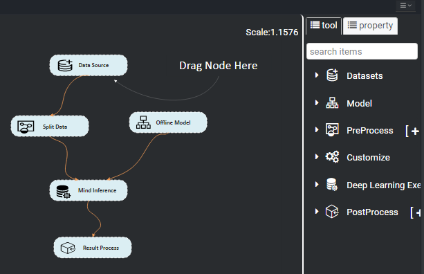
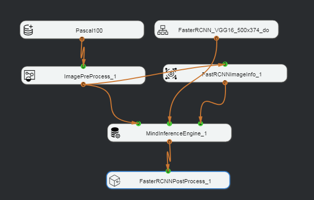
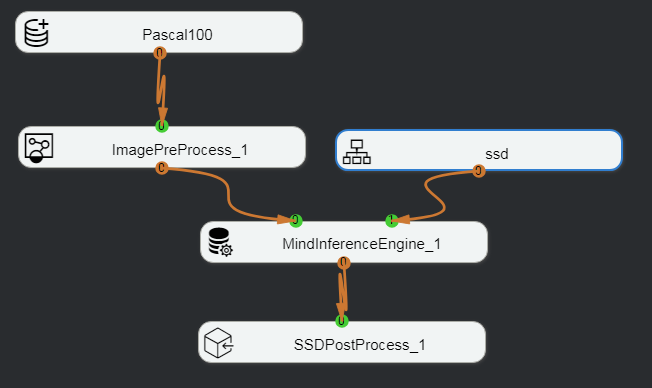
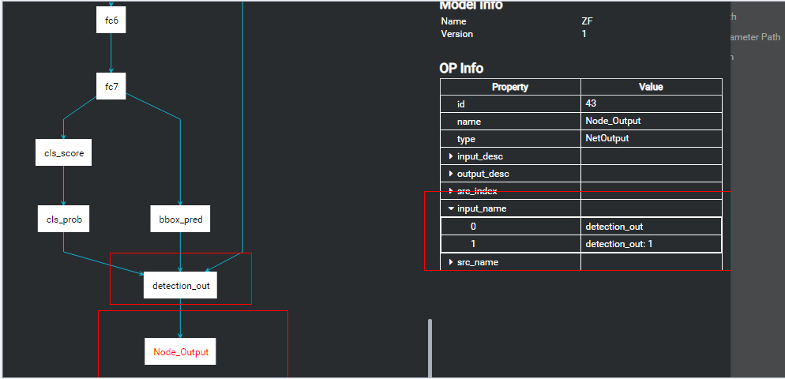

Orchestrating the Process
You can double-click the .mind file （for example, Demo.mind） to open the engine process orchestration window, as shown in Figure 1.
Figure 1 Process orchestration window

You can perform the following operations on the nodes in the figure: place nodes, delete nodes, copy nodes, set node attributes, save nodes, and add nodes. For details, see Basic Node Operations.
Figure 2 shows an example of the Faster-RCNN network.
Figure 2 Faster-RCNN example

A Faster-RCNN network consists of at least the following nodes: one dataset （Pascal100）, one model (FasterRCNN), one data preprocessing (ImagePreProcess), one model image information (FastRCNNImageInfo), one execution engine (MindInferenceEngine), and one image post-processing node (FasterRCNNPostProcess).
Figure 3 shows an example of the SSD network.
Figure 3 SSD network example

An SSD network consists of at least the following nodes: one dataset （Pascal100）, one model (SSD), one data preprocessing (ImagePreProcess), one execution engine (MindInferenceEngine), and one image post-processing node (SSDPostProcess).
Prerequisites
If the Faster-RCNN or SSD network is used to orchestrate the process, and the post-processing node is FasterRCNNPostProcess or SSDPostProcess, add the following operator to the last layer of the model file before importing the Caffe model file （for example, faster-rcnn_resent18.prototxt）. Otherwise, process orchestration fails. If the model file contains this operator already, skip this step.
Add the following content at the last layer of the Faster-RCNN model file:
layer {
name: "detection_out"
type: "FSRDetectionOutput"
bottom: "cls_prob"
bottom: "bbox_pred"
bottom: "rois"
top: "out_box_num"
top: "detection_out"
detection_output_param {
num_classes: 21
nms_threshold: 0.3
confidence_threshold: 0.8
}
}
Add the following content at the last layer of the SSD model file:
layer {
name: "detection_out"
type: "SSDDetectionOutput"
bottom: "mbox_loc"
bottom: "mbox_conf_flatten"
bottom: "mbox_priorbox"
top: "detection_out"
include {
phase: TEST
}
detection_output_param {
num_classes: 21
share_location: true
background_label_id: 0
nms_param {
nms_threshold: 0.45
top_k: 400
}
save_output_param {
label_map_file: "data/VOC0712/labelmap_voc.prototxt"
}
code_type: CENTER_SIZE
keep_top_k: 200
confidence_threshold: 0.3
}
}
The following uses the Faster-RCNN model file as an example:
Click  on the right of My Models to add the custom Faster-RCNN model component. After importing the model, drag the model to the canvas, right-click the model, and choose View Model from the shortcut menu, as shown in Figure 4.
on the right of My Models to add the custom Faster-RCNN model component. After importing the model, drag the model to the canvas, right-click the model, and choose View Model from the shortcut menu, as shown in Figure 4.
Figure 4 Choosing View Model from the shortcut menu
The network structure shown in Figure 5 is displayed. The last layer of the network structure of the original model consists of a prediction layer （bbox_pred） and a classification prediction layer (cls_prob). If the detection_out operator is not added, post-processing cannot be performed directly. When FasterRCNNPostProcess is added for process orchestration with post-processing, the execution fails.
Figure 5 Network structure of the original model
After the detection_out operator is added to the last layer of the original model network structure, as shown in Figure 6, process orchestration with post-processing （FasterRCNNPostProcess） can be directly performed.
Figure 6 Model network structure with the detection_out operator

Procedure
For details, see 3.1.2 "Orchestrating the Process."
- For details, see 1.
- For details, see 2.
Place the required nodes in their positions. For details about how to place a node, see 3.
Table 1 and Table 2 describe the nodes required by the Faster-RCNN network and SSD network, respectively.
Table 1 Nodes required by the Faster-RCNN network
Import the Faster-RCNN model. For details, see 5.2.1.1 "Adding a Custom Model Component" in the Mind Studio Basic Operations
Set resize_width and resize_height to 500 and 374, respectively.
Table 2 Nodes required by the SSD network
Import the SSD model. For details, see 5.2.1.1 "Adding a Custom Model Component" in the Mind Studio Basic Operations.
Set resize_width and resize_height to 300 and 300, respectively.
Establish connections between nodes.
After the required nodes are placed and attributes are set, set up the corresponding connections.
An orange round endpoint is an output port, from which a connection line can be led out. A green endpoint is an input port and can be used to place a connection line.
Figure 7 shows the final connections between the Faster-RCNN nodes.
Figure 7 Connections between the Faster-RCNN nodes

 NOTE:
NOTE:
Pay attention to the following points when setting up the connections:- In property setting of a Deep Learning Execute Engine node, set Input Count to 3.
- A PreProcess node must be connected to input port 0 of a Deep Learning Execute Engine node.
- The FasterRCNNImageInfo node must be connected to input port 2 of a Deep Learning Execute Engine node.
- A model node must be connected to input port 1 of a Deep Learning Execute Engine node.
Figure 8 shows the final connections between the SSD nodes.
Figure 8 Connections between the SSD nodes

 NOTICE:
NOTICE:
Pay attention to the following points when setting up the connections:- A PreProcess node must be connected to input port 0 of a Deep Learning Execute Engine node.
- A model node must be connected to input port 1 of a Deep Learning Execute Engine node.
Click Save at the bottom of the canvas.
Save the orchestration process.